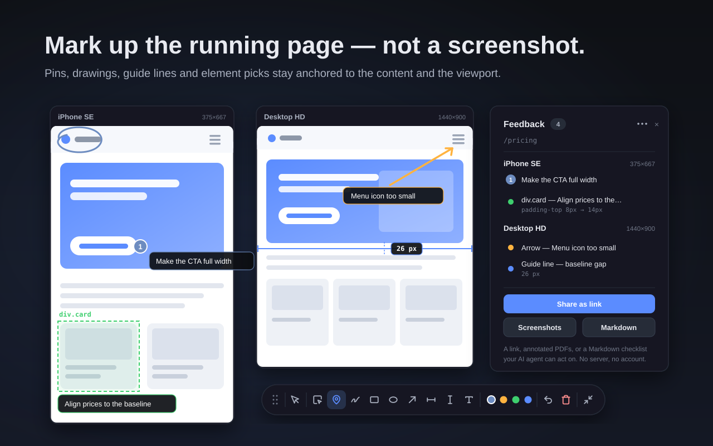
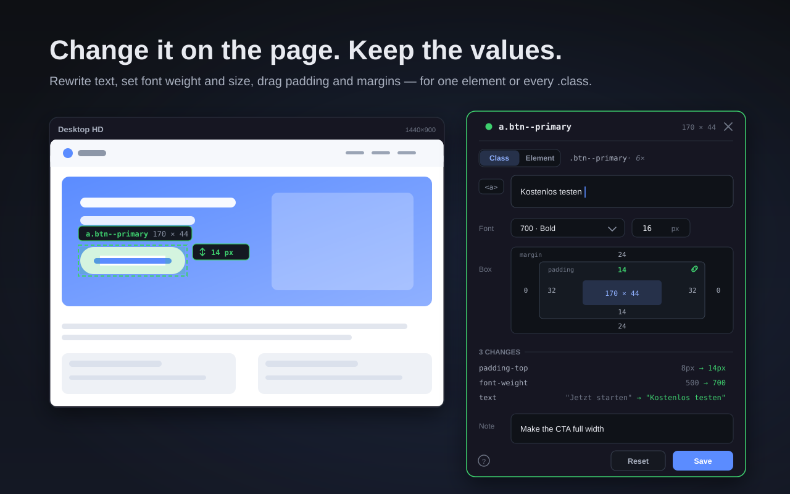
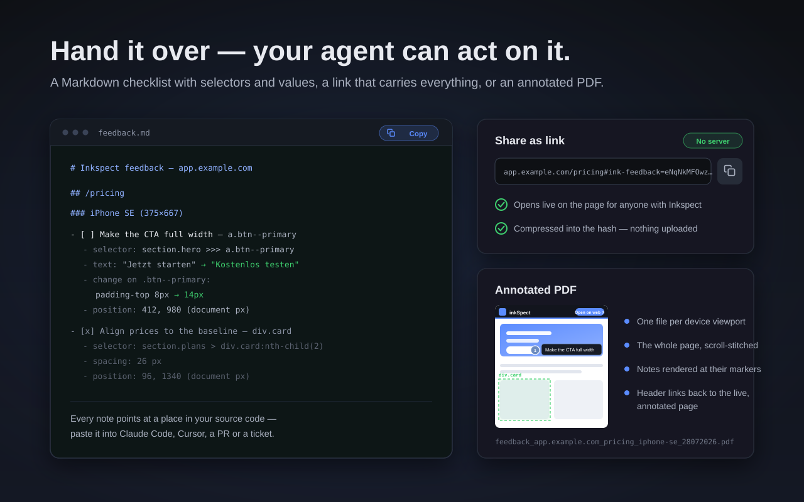
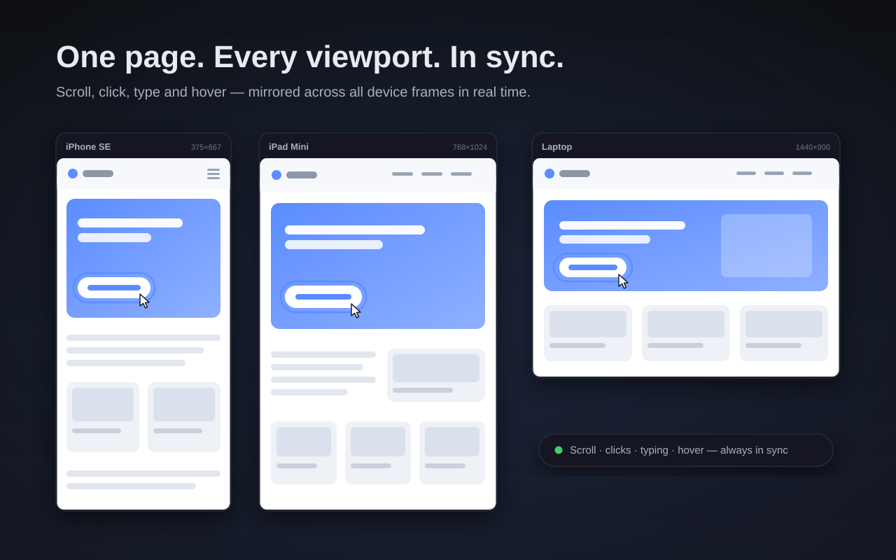
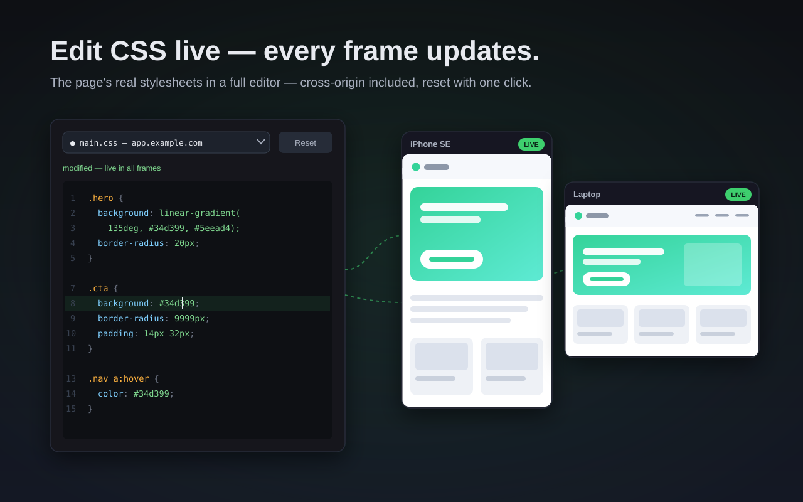

Website feedback that AI understands
“The button is too small” plus a screenshot makes an AI coding agent guess. Inkspect writes down what you actually meant — with the CSS selector, the current value and the target value of every note.
Chrome & Firefox · no account · nothing uploaded

Mark the page, not a screenshot
Everything happens on the page you are actually looking at — in your browser, with your session, at the viewport you care about.
Feedback an agent can act on
Copy every note of a site as a Markdown checklist. Each entry points at a place in your source code instead of at a pixel in a picture.
- CSS selector, Shadow DOM boundaries included
- Style changes as from → to, rewritten text, measured spacings
- Plain text — paste it into an agent prompt, a pull request or a ticket
- [ ] Headline sits too tight above the form - selector: .hero > h1.h1-display - change on .h1-display: margin-bottom 8px → 24px - text: “Get started” → “Start your free trial” - device: Desktop HD · position: 412, 268
Pick an element, change it, see it
Rewrite the text, change font weight and size, drag padding and margins per edge or all four linked. The change happens on the page — you see the result before you write it down.
- Class scope moves every .btn-primary, element scope just the one you picked
- Every edit is listed and can be reverted one by one

Hand it over three ways
A Markdown checklist for your agent, a share link that opens the markings live on the page, or an annotated PDF for tickets and reviews.
- The share link carries the data inside the URL — there is no server
- PDFs cover the whole page, one file per device viewport
- Notes are rendered right at their marker, so the file speaks for itself

Every viewport at once
See the page in phone, tablet and desktop widths side by side. Scrolling, clicks, typing, hover states and link navigation are mirrored across all frames in real time.
- Add, rotate and remove devices; define your own sizes
- Save a grid as a named set — your setup survives the session

Live CSS editor
Edit the page's stylesheets in a full editor, cross-origin sheets included. Changes apply instantly across every device frame and survive reloads.
- Reset any sheet back to the original with one click

Also in the box
Small things that turn a demo into a tool you keep open.
Markings that stick
They follow the content while you scroll and re-anchor to their element after a reload.
Guide lines that measure
Drag one across the page, drag a second, and the gap between them is measured in pixels — straight into the export.
A panel that keeps order
All feedback grouped per page and per device. Check items off as you fix them; badges count what is still open.
Full window mode
The page at full size with a floating tool bar you can drag anywhere, plus an optional phone mockup beside it.
Stubborn pages
Sites that refuse to be embedded can still be previewed via an explicit opt-in, scoped to the current tab.
Find your way
A guided tour on first open, and a shortcut sheet behind ? whenever you need it.
Nothing leaves your browser
There is no Inkspect server. Your feedback is stored locally in your browser. Share links carry the data compressed inside the URL itself, so a link works without anything being uploaded anywhere — and it stops working the moment you stop sharing it. Read the full privacy policy.
Try it on the page you have open
One click on the toolbar icon. No account, no setup, no upload.